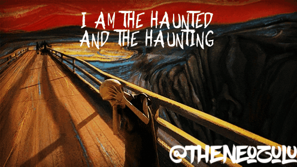
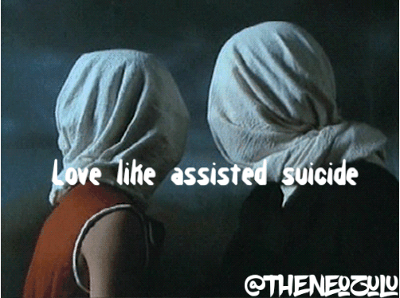
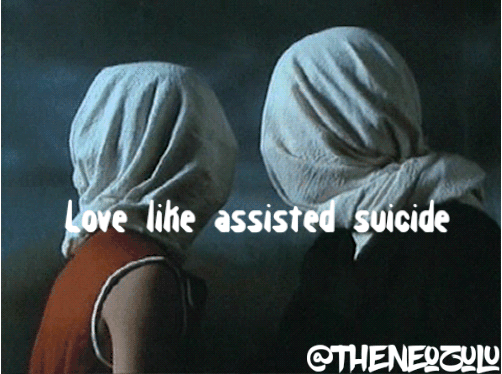

Thuthukani Myeza styled THTHKNI MYZA is a writer,poet,performer and songwriter. Thuthukani's writing style is what he refer's to as Fluidity. Meaning it can be anything it can take any shape. Thuthukani Myeza prides himself in being a highly versitile writer. Winner of the gauten provincial slam in 2017. Winner of the National South African Slam in 2018. Thuthukani is also the co-founder of World of Words Poetry sessions. Welcome to the man who ghost writes for God.

Thuthukani Myeza styled THTHKN MYZA,is a South African born writer and perfomer from dusty village that time forgot way out in Mpumalanga.

Thuthukani myeza's alter ego the Neo zulu
On his mission to wrting the world back into its orginal script. Thuthukani started experm,enting with rap. He later went on to write songs for the ghost band " The Bantu"
The Witching hours is a micro poem series by Thuthukani that blends photgraphy and animation with poetry
 
